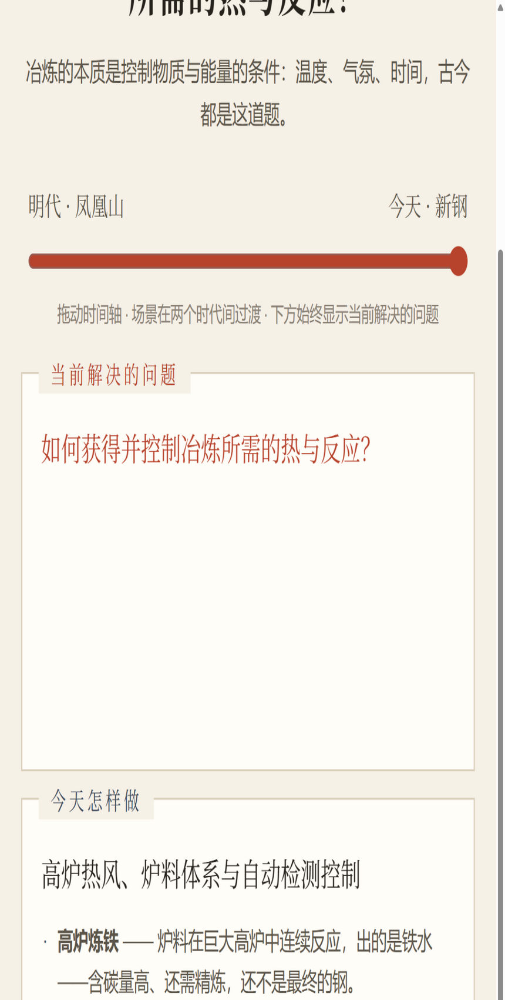

《开物脉络》· 核心交互 · A3-02
一块铁，近四百年。
同一道造物题，古今不同解。
主界面：时间滑块
明代 · 凤凰山 ←拖动→ 今天 · 新钢
明代 · 凤凰山
今天 · 新钢
古人怎样做
入山取矿，识石选料——含铁量不足的矿石，炼不出好铁。
⇄
拖动
今天怎样做
地质勘探—规模采选—精准配料，原料端就开始精确控制。
造物 · 取材
材从哪里来？
古人怎样做
炉型、木炭、鼓风与火候经验——炉色火苗都是“数据”。
⇄
拖动
今天怎样做
高炉热风、炉料体系与自动检测控制——经验变成集控数据。
造物 · 控火
如何获得并控制冶炼的热与反应？
古人怎样做
铸模浇铸、锻打成器——千锤百炼，一个动作兼管成形与提纯。
⇄
拖动
今天怎样做
转炉降碳去杂、连铸成坯、轧制成材——“炼出来”只是中间态。
造物 · 成形
如何让材成为器？
古人怎样做
工匠经验与用途适配——农具、锅具、兵器，打法各不相同。
⇄
拖动
今天怎样做
成分—组织—性能设计，精深加工与新材料研发。
造物 · 控性
如何让器更好用？

交互机制
① 拖动时间轴，场景在两个时代间过渡
② 页面下方始终保留“当前解决的问题”
③ 三个入口：古人怎样做 / 今天怎样做 / 为什么变了
图：控火问 · 今天侧（真实运行界面）
为什么这不是“左边古代、右边现代”的对比展？
新钢历史陈列馆已把《天工开物》冶铁场景与现代钢厂放在一起。我们不重复“展示古今”， 而是让用户围绕共同造物问题，比较
不同历史条件下的解法为什么变化
—— 滑动换的不是图片，是同一道题的答案。
依据边界：古今对照均标注
史料关联 / 功能类比 / 设计解释
三类，不将“共同解决类似问题”表述为“直接技术传承”。宋应星与凤凰山遗址之关系沿用新余市博物馆谨慎表述（“应是……资料来源地之一”）。
《开物脉络》——面向工业研学的古今工艺认知导航系统 · 参赛方向：数字智能
A3-02 / 5 · 地域基底：凤凰山古铁冶 · 《天工开物》 · 新余现代钢铁产业链